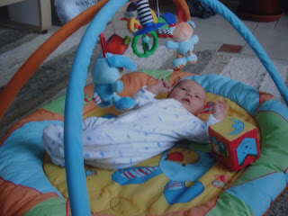
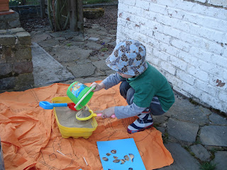
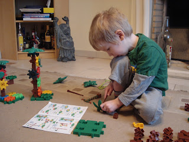

Living with a gifted child
A personal journey, told by a parent who is also a dyslexia specialist.

As cliched as it sounds my son was different from the very beginning. Even in hospital after he was born he was very alert, he never liked to lie down or sleep. I can remember going to post natal physiotherapy classes, all the other children were sat happily in their maxi cosi but he could never sit through a whole session even through he had fiddle toys. He wanted to move and do something, he was interested it what was going on. He even tried to comfort another baby who was crying by patting their hand. My son was always active and he did not like to sleep.
People continually debate nature v nurture and I often feel I get the 'blame' for my son's advanced development. Of course we can do things to enhance or hinder our child's development but I still believe that certain things are intrinsic to your child.
I didn't spend a lot of time thinking about how I would bring my child up but as I am dyslexic I decided two specific things. I decided to give a running commentary about what I could see and what I was doing from the day he was born, as I know many dyslexics often have delayed speech. I always spoke to him as if he was another person who understood what I was saying long before he could speak or respond for himself. I used the proper terms for things like 'bamboo' and 'roses' as we walked around our neighbourhood. Imagine my shock when at 22 months he said 'Look condensation' pointing at a window covered in condensation!
My other decision was to read to him every night as soon as he could sit up and focus on the book. I did this from the age of 6 months, again I didn't worry about whether he could understand what I was saying. I just went ahead and read the story and talked about the pictures. I did this because I thought it might encourage his love of reading and reading skills and compensate for any dyslexic traits he might have. Strangely enough by the age of 2, he had progressed to an encyclopedia, which I had to read 2 pages of every night before he went to sleep. When he was 3, I read him the Wizard of Oz a chapter at time each night. By then he was articulate enough to talk about the characters and he understood that each character asked for the characteristics they already had.
By the age of 2 he knew the alphabet, as my husband sang the alphabet song while he changed his nappy. By 2 and a half he knew all the letter sounds as we played 'I spy' in the car. He would point out letters in the environment. I still remember being a shopping centre when he was 22 months and he said 'look mum there's a Z' as he saw the ZARA shop sign. By 3 and a half he had started to learn to read as he had memorised whole books so that he could pretend to read and he was constantly asking what words said.

Many people think we must have 'hot housed' our child but I have to say that the things it always felt like our son was the driving force rather than us. It was exhausting because he was so active and once he could talk he never stopped. Most activities we did were just the things he wanted to do and many of them we discovered by accident. Like his love of archeology which started because my father in law was watching 'Time team' while my son was playing. My son became fascinated by digging for artefacts in the garden and pretended to find Roman pottery. He joined the young archeological society and found out as much as he could about history. When he was about 4, he woke up one morning and his first comment of the day was to ask me if the Egyptians had hypocausts like the Romans. These sort of questions came thick and fast at any time of day and in any situation and an immediate answer was expected.
So what do you do? Ignore your child, tell them they are too young to know about or do these things, force them to play with age appropriate toys? Or let yourself be swept along with 'the force of nature' which is part an parcel of a gifted child. I believe most parents in the same situation, would answer their children's questions and look for interesting activities and books for their child.

The lack of understanding from other parents is the hardest part to deal with, alongside not being able to share the joy of your child's achievements with friends and family. Having to try to 'hide' your child's abilities and interests and guarding what you say and share is very tiring. At the same time you are struggling to meet your child's needs, are exhausted by their constant activity and are worrying about whether you are doing the right thing. But you are completely isolated and no one has any sympathy for you, as surely it is easy to have such a bright child?
Part 1 of a personal journey, written by Helen Trethewey.